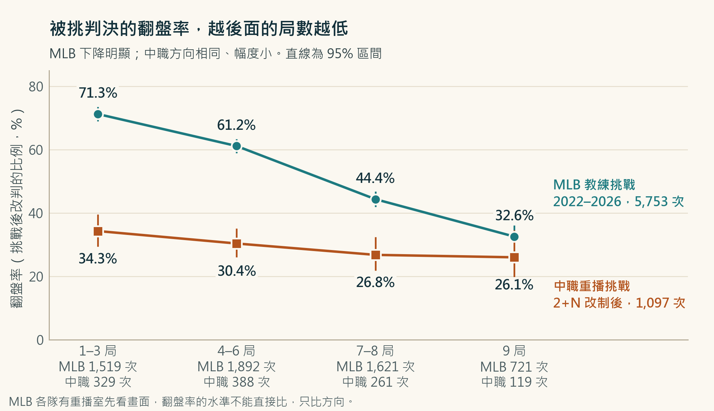

一句話
改判的把握超過門檻，就挑。門檻只由兩個數決定：這個判決改過來值多少（判決價值），和這次挑輸了會損失多少（挑戰權價值）。
門檻 ＝ 挑戰權價值 ÷（判決價值 ＋ 挑戰權價值）
適用「成功保留、失敗扣一次」的規則；兩個價值的單位都是勝率百分點。
判決價值 ΔW
改判後的勝率減原判的勝率。從中職 2023–2026 例行賽 1,362 場、390,489 顆投球建的勝率表查出來。挑戰權價值 C
少一次挑戰權，後面會損失多少勝率。從九局下往回一個半局一個半局推出來（動態規劃）。把握 p
現場的人對「會改判」的判斷。模型不替人判斷，只回答要多少把握才夠。直接查門檻
查門檻卡
卡片上的門檻：–
自己代數字
門檻：–
預設值是提案裡的例 1：這個判決值 17.19 個百分點；只剩 1 次時 C ＝ 0.630，門檻 3.5%；還剩 2 次時 C ＝ 0.045，門檻 0.3%。
兩張門檻卡
重播門檻卡（18 格）
| 局 | 1 | 2 | 3 | 4 | 5 | 6 | 7 | 8 | 9 |
|---|---|---|---|---|---|---|---|---|---|
| 還剩 2 次 | 2% | 2% | 1% | 1% | 1% | 1% | 1% | 1% | 1% |
| 只剩 1 次 | 13% | 13% | 11% | 10% | 9% | 7% | 6% | 4% | 2% |
依 26,279 個實際壘上判決分格。每格是「格內平均挑戰權價值 ÷（平均判決價值 ＋ 平均挑戰權價值）」取整數，最低 1%。
好壞球門檻卡（54 格，試算）
| 局 | 滿球數 | 兩好球或三壞球 | 其他球數 |
|---|---|---|---|
| 1 | 15% | 25% | 45% |
| 2 | 10% | 25% | 45% |
| 3 | 10% | 20% | 40% |
| 4 | 9% | 20% | 40% |
| 5 | 8% | 20% | 35% |
| 6 | 6% | 15% | 30% |
| 7 | 5% | 10% | 25% |
| 8 | 3% | 7% | 15% |
| 9 | 1% | 3% | 6% |
| 局 | 滿球數 | 兩好球或三壞球 | 其他球數 |
|---|---|---|---|
| 1 | 25% | 40% | 65% |
| 2 | 25% | 40% | 65% |
| 3 | 20% | 40% | 60% |
| 4 | 20% | 35% | 60% |
| 5 | 15% | 35% | 55% |
| 6 | 15% | 30% | 50% |
| 7 | 15% | 25% | 45% |
| 8 | 10% | 20% | 40% |
| 9 | 5% | 10% | 25% |
中職還沒有實施好壞球挑戰。這張卡用 MLB 2026 的逐球資料，套中職的勝率模型試算；中職實施後要用中職資料重做。
三個發現
1–2%
重播挑戰權很便宜
開賽還剩 2 次時，失去一次只值 0.11 個勝率百分點，卡片門檻只有 1–2%。只剩 1 次時，門檻從一局的 13% 降到九局的 2%。5.3%
球隊常常沒用完
2024-05-28 改制後例行賽 968 場，九局內球隊挑戰 1,097 次，翻盤率 30.3%；兩次都用完的隊伍場次只有 5.3%。不能套用
好壞球是另一回事
好壞球挑戰權貴得多（開賽只剩 1 次時值 1.77 個百分點，重播是 0.93），門檻高很多，而且要看球數：2 好 3 壞的球改判價值中位數 4.76 個百分點，0 好 0 壞只有 0.62。方法
- 勝率表（兩段拆解）。局面切細後有 46,656 格，33% 沒有資料，直接計次連方向都可能相反。改成先算「這個半局得幾分」，再算「半局結束後的比分會不會贏」。留一年交叉驗證，預測分 10 組，和實際勝率最大差 1.5 個百分點；Brier 分數 0.157。
- 挑戰權價值（從九局下往回推）。手上 r 次的價值 ＝ 這個半局用掉的預期收益 ＋ 留到下個半局的價值；C ＝ 有 r 次的價值 − 有 r−1 次的價值。
- 重播的潛在爭議校準。沒被挑的判決對不對沒有人知道，所以假設一群潛在爭議，讓模型的挑戰次數和翻盤率對上實際資料。這組參數定不出唯一的值，是已知限制。
- 卡片。現場不可能算公式，所以按局數（好壞球再加球數）分格，每格印一個數字。
檢驗
- 歷年規則變動。跨期整體看，規則越寬，球隊挑得越多、翻盤率越低，和模型方向一致（不是每一期都如此）。中間三期共 1,492 場的挑戰結果沒有用來選參數。
- 局數。模型的門檻越後面越低，被挑判決的翻盤率也隨局數下降（1–3 局、4–6 局、7–8 局、9 局）：中職改制後 34.3% → 30.4% → 26.8% → 26.1%；MLB 教練挑戰 71.3% → 61.2% → 44.4% → 32.6%。
- 卡片和精確門檻比。對 26,279 個實際壘上判決，照卡片挑拿到照精確門檻挑的 98.8%–100.0%（還剩 2 次）和 91.4%–98.7%（只剩 1 次）。
- 好壞球卡的模擬。固定 MLB 2026 的投球順序，球員只看得到帶雜訊的位置。換算每隊一季 120 場、含延長賽、和模擬的球員挑法比：「把握過半才挑」−0.63 勝，照卡片挑 +0.24 勝（0.21～0.27），照精確門檻挑 +0.53 勝。
- 和球員實際拿回的價值比（九局內）：卡片的增益比較小，而且隨感知模型而變，每隊一季 0.02～0.15 勝。比較穩的結論是「一律等過半把握最差」；卡片增益的大小還不能確定。
以上是「和資料一致」的檢驗，不是實際戰績；不能據此說球隊照卡片可以多拿幾勝。


邊界和下一步
- 門檻卡沒有在現場試用過。查不查得到、記不記得住、限時內用不用得對，都還沒測。
- 把握要靠人判斷。把握偏高或偏低時，卡片的效果會變差，所以規劃搭配賽後對答案的回饋訓練；訓練設計列入決賽前的開發時程。
- 重播沒被挑的判決對不對沒有人知道，所以不判定教練是否挑得太少；潛在爭議的參數定不出唯一的值，每個球季要用新資料重新校準。
- 好壞球是 MLB 資料套中職勝率模型的試算。
- 卡片上的數字每個球季要用新資料重跑；公式和方法不變。
這個網站有什麼
- 互動 Demo：規則試算沙盤、門檻卡、可信度檢驗。
- 挑戰門檻計算機：輸入局面，查勝率、判決價值和門檻；手機可用。
- 門檻卡 A6 列印版：重播 18 格、好壞球 54 格，可以直接列印。
本站只含統計量和模型輸出表，不含任何逐球原始資料。